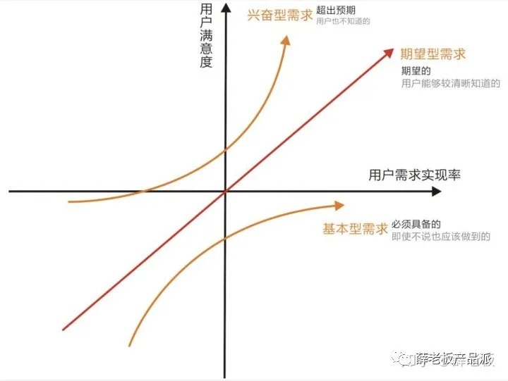
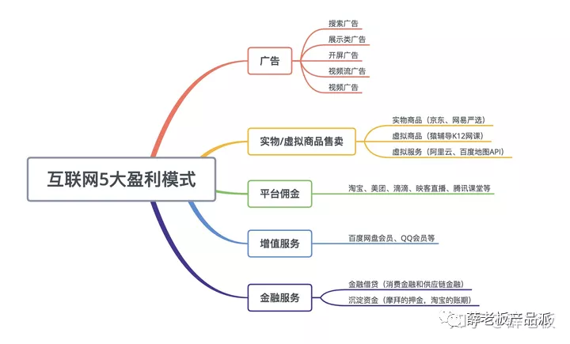

概述
- 平时一直做技术，习惯看技术文章、交流技术问题, 但技术人必须具备产品思维, 才能更好的为业务输出价值.
- 在设计运维工具时, 处处需要用到产品思维. 往深了看, 其实不同岗位的
道是相通的. - 本篇以产品经理的高频面试题为基础, 进行总结和梳理其中的产品思维.
产品经理基础技能
基础技能
- 包括
需求分析、用户调研、竞品分析、产品设计、项目管理、数据分析
产品能力
- 包括
沟通能力、执行能力、逻辑思维、学习能力、领导能力、创新能力
为什么觉着自己适合做产品经理
建议按照如下逻辑框架回答：
-
1）从性格上来说，我是适合做产品经理的，巴拉巴拉XXXXX（举例证明性格适合做产品的点）
-
2）从能力上来说，我是能够胜任做产品经理的，巴拉巴拉XXXXX（举例证明自己所掌握的产品技能）
回顾下运维工作:
- 也可以从
性格、能力2个方面来衡量.
什么是一款成功的产品
每个人对于成功产品的定义是不一样的，所以这一题没有标准答案，但一定要有自己的思考框架，建议按照如下方法回答：
-
1）从用户的角度：能持续不断的解决目标用户的需求；用户操作简单方便，在使用产品后能够快速的有效的解决问题。
-
2）从产品的角度：该产品相较于其他竞品有着独特的优势，产品能够持续不断的迭代以满足目标用户的需求。
-
3）从商业的角度：公司的技术层面可以实现该产品，并且可以长期维护，持续完善；该产品可以为公司创造长期的可持续价值，包括但不限于利润，盈利模式，市场价值，战略地位等；
产品经理的需求来源有哪些？
这个问题考察你对产品经理工作流程的理解，一般在实际工作中产品经理的需求有4大来源，分别是:
-
1）产品需求：产品经理通过数据分析、用户调研、竞品分析等方法验证通过的需求.
-
2）运营等业务部门提交的需求：比如以京东为例，服饰业务部/生鲜业务部/家电事业部的运营、采销等人员出于提升业务指标的角度会提出各种需求.
-
3）老板的需求：领导从外部合作的角度或者产品战略的角度也会给手下的产品经理提一些需求，比如我还接到过大Boss的需求.
-
4）Bug修复等：在工作中修复BUG是一件比较常见的事情，影响面大的BUG会走紧急修复流程，不太严重的BUG会走迭代排期.
回顾下运维工作
- 1) 运维工程师的需求来源有哪些?
-
- 其实答案和上面的雷同, 因为最终肯定需要运维团队来运维上述产品.
- 2) 运维工程师平时在做哪些工作？
-
- 总体来说, 分为
配置管理、变更管理、状态管理3大类.
- 总体来说, 分为
- 3) 考核目标是什么?
-
稳定、高效、低成本, 也就是花更少的钱，让产品更加稳定运行、更快速迭代
产品经理如何进行需求优先级的排布
在实际工作中，需求来源会非常多，需求池中也会有各种需求，那需求优先级如何规划呢？
一般来说有两个场景：
1、从0到1设计一款产品
这种场景下的需求来源基本上都是产品需求。建议大家去了解一下KANO模型，这个场景下的需求优先级一般来说是：基本型需求>期望型需求>兴奋型需求

2、在原有产品基础上优化
这种场景的需求来源会非常广泛，可能之前讲到的4中来源都是涉及，那如何排定需求优先级呢？一般按照产品价值和实现成本两个维度。
产品价值可以分为两类：业务价值和用户价值。
价值定义：
业务价值：对应商业类产品，称为商业价值，体现在能给业务带来多少收益。
用户价值：对于使用者来说，能给他带来的价值，比如说能减少操作步骤。
在这种方法下，优先级的排序逻辑是：产品价值大实现成本低>产品价值大实现成本高>产品价值小实现成本低>产品价值小实现成本高。
补充: 要看ROI.
互联网公司典型的商业模式有哪些？

实习期间有没有和设计/研发争执过，怎么解决的？
参考解析：
具体问题具体分析，如果是UI或产品对产品需求本身存在疑问，可参考如下：
-
1）摆数据：证明做这个需求的必要性及完成之后的收益
-
2）讲道理：说明这个需求跟公司整体战略的一致性
-
3）向上沟通：如果基础沟通不能达成一致，可将双方领导拉到一起讨论
产品上线之后需要关注哪些数据指标？
这个问题主要考察你对数据分析的理解，当然不同类型的产品需要关注的数据指标是不一样的，所以在面试时最好问清楚面试官产品类型。
一般来说产品上线之后需要关注的指标有：
- 1）注册用户数：已注册用户的总和
- 2）次日留存/7日留存
- 3）ARPU：总收入/总用户数，即每个用户的平均收入
- 4）日活跃用户数/月活跃用户数
- 5）新用户增长率
- 6）新用户占比：新用户占今日活跃用户数的比例
- 7）用户流失率
- 8）渠道转化率
回顾下运维工作
- 其实产品上线之后, 运维工程师最需要关注PCU(Peak concurrent users),
最大同时在线玩家人数
完整的产品分析一般包含哪些维度：
-
1、定位分析，产品的目标用户是谁？解决了他们什么问题
-
2、需求分析，就是目标用户需求的频繁程度和强度如何？是不是刚需高频？产生需求的场景有哪些？
-
3、市场分析，就是市场规模什么样的，市场现状是什么样的？市场发展方向是什么样的呀？
-
4、竞品分析，就是有哪些竞品，市场份额分别占到占多少，各个竞品切入点的差异等等
-
5、视觉分析，整体色调如何？各图标设计的好坏
-
6、交互设计分析，导航路径是否清晰？主要功能的触达率如何？
-
7、功能分析，这个产品有哪些关键功能，用哪些关键功能满足了用户的核心需求？满足的好不好？有什么优化空间等等。功能分析一定要作为一个重点去进行分析，因为毕竟是一场产品经理的面试。
-
8、运营分析，做了哪些运营活动？效果质量如何啊？
在真实的面试场景中，根据产品的特质，要进行有条理、有细节的分析，往往就可以得到面试官的好评。
产品经理的工作流程是什么？
在实际工作中，产品经理的工作流程一般分为如下步骤：
-
1）需求收集，具体收集方法如题4所示；
-
2）需求池管理，收集来的需求需要放到需求池中统一管理
-
3）需求优先级，需要根据优先级进行需求迭代，具体方法如题5所示
-
4）需求确定，找自己的直属领导确认每一个迭代的需求
-
5）产品设计，使用竞品分析、脑图、流程图、原型图、PRD等方法详细的梳理产品逻辑
-
6）项目管理，使用项目排期表等方式推动项目按时并且保质保量的上线
-
7）数据分析，产品上线之后通过数据分析等方法验证功能/产品是否达到预期效果，如果没有需要如何优化，然后开启另一个版本的迭代。
你遇到的最大的挫折是什么？如何解决的？
这是HR面经常会遇到的问题，让很多求职者非常头疼，因为没有好的思路。要想回答好这个问题，我们要先弄清楚HR想要通过这道题了解什么呢？
-
1、考察你如何看待挫折这件事。就是你认为什么事对你来说算挫折。如果对大多数人都习以为常的事情，你看做是挫折，那就要反思一下是不是自己太玻璃心，抗压能力差了。
-
2、看你解决问题的思路及能力。在工作中遇到挫折是特别正常的事，重要的是你是如何解决这个问题以及解决的好不好。
-
3、侧面了解你的学习能力。遇到问题、解决问题之后你能不能从中总结经验教训，同样的问题不会再犯第二次，这就是一个人的自我学习能力。
你最大的缺点是什么？
面试希望通过这道题目考察什么呢？
1）看你的缺点是否会影响本职工作。
所以在回答此类问题时，一定记住：不能回答对本职工作影响很大的缺点，比如领导能力差,逻辑不清晰,不善于沟通等等。
2）看你回答问题的思路是否足够有条理。
回答此类问题建议按照三步走：
- 第一步：说出自己的一个缺点；
- 第二步：说出这个缺点给自己造成的困扰；
- 第三步：自己是如何努力去克服这个缺点的。